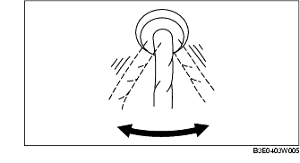
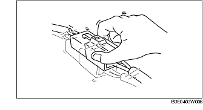
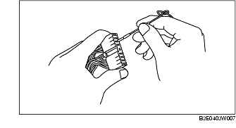

Troubleshooting ➭ BRAKES ➭ PRECAUTION
PRECAUTION
id040300804100
{: #wp1059776}
Vehicle with ABS
- Any one or a combination of the ABS warning and BRAKE system warning lights illuminate even when the system is normal.
*1 : {: #wp1060294} The light will illuminate only when ABS HU/CM detects that a rear wheel-speed sensor is malfunctioning. {: #wp1060314} *2 : {: #wp1060324} If battery voltage drops below 9 V{: #wp1060360} while vehicle speed is greater than 6 km/h {3.7 mph} , the ABS HU/CM stores DTC B1318.
- Precautions during servicing of ABS
The ABS is composed of electrical and mechanical parts. It is necessary to categorize malfunctions as being either electrical or hydraulic when performing troubleshooting.
(1) Malfunctions in electrical system
• The ABS HU/CM has an on-board diagnostic function. With this function, any one or a combination of the ABS warning light and BRAKE system warning light will illuminate when there is a problem in the electrical system. Also, past and present malfunctions are stored in the ABS HU/CM. This function can find malfunctions that do not occur during periodic inspections. Connect the M-MDS to the DLC-2. Stored malfunctions will be displayed in the order of occurrence. To find out the causes of ABS malfunctions, use these on-board diagnostic results. {: #wp1060403}• If a malfunction occurred in the past but is now normal, the cause is likely a temporary poor connection of the wiring harness. The ABS HU/CM usually operates normally. Be careful when searching for the cause of malfunction. {: #wp1060427}• After repair, it is necessary to clear the DTC from the ABS HU/CM memory. {: #wp1060439}Also, if the ABS related parts have been replaced, verify that no DTC is displayed after repairs. {: #wp1060451}• After repairing the ABS wheel-speed sensor or ABS sensor rotor, or after replacing the ABS HU/CM, the ABS warning light may not go out (*) even when the ignition switch is turned to the ON position. In this case, drive the vehicle at a speed of 10 km/h {6.2 mph} or more, make sure that ABS warning light goes out, and then clear the DTC. {: #wp1060480}* The BRAKE system warning light also illuminates when there is any rear wheel deformation. {: #wp1060495}• When repairing, if the ABS related connectors are disconnected and the ignition switch is turned to the ON position, the ABS HU/CM will mistakenly detect a fault and record it as a malfunction. {: #wp1060502}• To protect the ABS HU/CM, make sure the ignition is off before connecting or disconnecting the ABS HU/CM connector.
(2) Malfunctions in hydraulic system
• Symptoms in a hydraulic system malfunction are similar to those in a conventional brake malfunction. However, it is necessary to determine if the malfunction is in an ABS component or the conventional brake system. {: #wp1060538}• The ABS hydraulic unit contains delicate mechanical parts. If foreign material gets into the component, the ABS may fail to operate. Also, it will likely become extremely difficult to find the location of the malfunction in the event that the brakes operate but the ABS does not. Make sure foreign material does not enter when servicing the ABS (e.g. brake fluid replacement, pipe removal).
Vehicle with DSC
- The ABS warning light and/or BRAKE system warning light and/or DSC indicator light and/or DSC OFF light illuminate even when the system is normal.
- Precautions during servicing of DSC
The DSC is composed of electrical and mechanical parts. It is necessary to categorize malfunctions as being either electrical or hydraulic when performing troubleshooting.
(1) Malfunction in electrical system
• The control module has an on-board diagnostic function. With this function, the ABS warning light and/or BRAKE system warning light and/or DSC indicator light and/or DSC OFF light will illuminate when there is a problem in the electrical system. {: #wp1061140}Also, past and present malfunctions are in the control module. This function can find malfunctions that do not occur during periodic inspections. Connect the M-MDS to the DLC-2, the stored malfunctions will be displayed in the order of occurrence. To find out the causes of DSC malfunctions, use these on-board diagnostic results. {: #wp1061161}• If a malfunction occurred in the past but is now normal, the cause is likely a temporary poor connection of the wiring harness. {: #wp1061170}The control module usually operates normally. Be careful when searching for the cause of malfunction. {: #wp1061180}• After repair, it is necessary to clear the DTC from the control module memory. {: #wp1061186}Also, if the DSC related parts have been replaced, verify that no DTC is displayed after repairs. {: #wp1061196}• After repairing the ABS wheel-speed sensor or ABS sensor rotor, or after replacing the control module, the ABS warning light may not go out even when the ignition switch is turned to the ON position. In this case, drive the vehicle at a speed of more than 10 km/h {6.2 mph}, make sure the ABS warning light goes out, and then clear the DTC. {: #wp1061202}• When repairing, if the DSC related connectors are disconnected and the ignition switch is turned to the ON position, the control module will mistakenly detect a fault and record it as a malfunction.
Caution
• In DSC vehicles, when the DSC HU/CM, steering angle sensor, or combined sensor is replaced, perform the initialization procedure for each sensor. (See STEERING ANGLE SENSOR INITIALIZATION PROCEDURE.) (See COMBINED SENSOR INITIALIZATION PROCEDURE.) (See STEERING ANGLE SIGNAL INITIALIZATION PROCEDURE.)
• To protect the control module, make sure the ignition is off before connecting or disconnecting the control module connector.
(2) Malfunctions in hydraulic system
• Symptoms in a hydraulic system malfunction are similar to those in a conventional brake malfunction. However, it is necessary to determine if the malfunction is in a DSC component or the conventional brake system. {: #wp1061303}• The hydraulic unit contains delicate mechanical parts. If foreign material gets into the component, the DSC may fail to operate. Also, it will likely become extremely difficult to find the location of the malfunction in the event that the brakes operate but the DSC does not. Make sure foreign material does not enter when servicing the DSC (e.g.brake fluid replacement, pipe removal).
Intermittent Concern Troubleshooting
Vibration method
• If a malfunction occurs or becomes worse while driving on a rough road or when the engine is vibrating, perform the following steps.
*Note*{: #wp1061361}
• There are several reasons why vehicle or engine vibration could cause an electrical malfunction. Inspect the following:
- Connectors not fully seated. {: #wp1061379}- Wire harnesses not having full play. {: #wp1061393}- Wires laying across brackets or moving parts. {: #wp1061403}- Wires routed too close to hot parts.
• An improperly routed, improperly clamped, or loose harness can cause wiring to become pinched between parts. {: #wp1061423}• The connector joints, points of vibration, and places where wiring harnesses pass through the firewall, body and other panels are the major areas to be inspected.
Inspection method for switch connectors or wires
-
Connect the M-MDS to DLC-2.
-
Turn the ignition switch to the ON position (engine off).
*Note*{: #wp1061475}
• If the engine starts and runs, perform the following steps at idle.
-
Access PIDs for the switch you are inspecting.
-
Turn the switch on manually.
-
Slightly shake each connector or wiring harness vertically and horizontally while monitoring the PID.{: #wp1061513}

• If the PID value is unstable, inspect for poor connection.
Inspection method for sensor connectors or wires
-
Connect the M-MDS to the DLC-2.
-
Turn the ignition switch to the ON position (engine off).
*Note*{: #wp1061610}
• If the engine starts and runs, perform the following steps at idle.
-
Access PIDs for the switch you are inspecting.
-
Slightly shake each connector or wiring harness vertically and horizontally while monitoring the PID.{: #wp1061638}

• If the PID value is unstable, inspect for poor connection.
Inspection method for sensors
-
Connect the M-MDS to DLC-2.
-
Turn the ignition switch to the ON position (engine off).
*Note*{: #wp1061711}
• If engine starts and runs, perform the following steps at idle.
-
Access PIDs for the switch you are inspecting.
-
Vibrate the sensor slightly with your finger.
• If the PID value is unstable or a malfunction occurs, inspect for poor connection and/or poorly mounted sensor.
Malfunction data monitor method
- Perform the malfunction reappearance test according to malfunction reappearance mode and malfunction data monitor. The malfunction cause is found in the malfunction data.
Inspection method for connector terminal
-
Inspect the connection condition of each female terminal.
-
Insert the male terminal, and fit the female terminal side to female terminal. Inspect if the malfunction is in the female terminal.{: #wp1061805}
